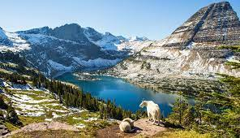
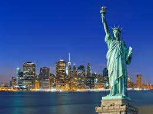
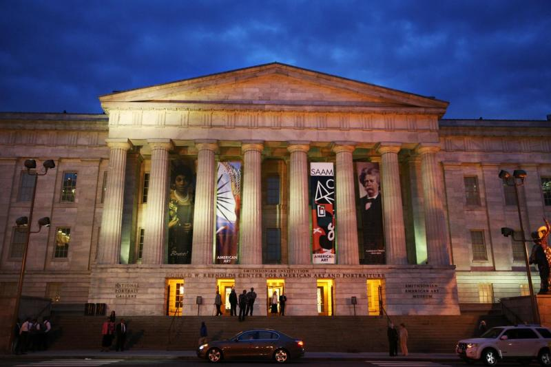
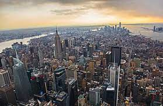

Top Ten Places To Visit In America

Rank #1
Glacier National Park
Glacier National Park is one of the most visited places in the US. It has two mountain ranges and includes more than 700 lakes across the state of Montana.

Yellowstone National Park
Yellowstone national park has a 2 million acre that stretches across Wyoming, Montana, and Idaho that is special

Siesta Key Beach
Siesta Key is an eight mile long island where you can go and get a relaxing gateway in Florida's South westcoast. You can take the free trolly service and get around the island.
Rank #2
Maui Beach
Maui extends to 30 miles of beaches. You'll find white or black sand beaches. There is a lot of spots to surf or simply swim, snorkel or sunbathe. The best time to visit is from April to May or from September to November.

The Statue Of Liberty is one of the most recognizable figures in the world. The liberty island is located in the New York Harbor and can only be reached by ferry boat. The best time to visit the Statue Of Liberty is from Tuesday-Thursday during spring or fall.
Rank #1
Statue Of Liberty
The Statue Of Liberty is one of the most recognizable figures in the world. The liberty island is located in the New York Harbor and can only be reached by ferry boat. The best time to visit the Statue Of Liberty is from Tuesday-Thursday during spring or fall.

Rank #2
The White House
The White House has been the seat of the US goverment and home of the Presidents of the United States of America for more than 200 years. You are encouraged to schedule a tour as early as possible because many spots fill up quickly.

Rank #1
The Metropolitan Museum of Art
This museum is located in Manhattan, New York. This is considered to be the largest museum in the US and fourth largest museum in the world. It contains more than 1.5 million pieces of work.

The Smithnosian National Museum of Natural History is located in Washington, Dc. This museum connects to people to the unfold history of the Earth. It is free admission and is open to the public everyday.
Rank #2
Smithsonian National Museum of Natural History
The Smithnosian National Museum of Natural History is located in Washington, Dc. This museum connects to people to the unfold history of the Earth. It is free admission and is open to the public everyday.

Rank #1
Grand Canyon National Park
The Grand Canyon is located in Northern Arizona and it is one of the greatest tourist attractions in the United States. It's colorful landscape and scenery attracts people from around the world. The best time to visit is from April to May.

Rank #2
Manhattan
Manhattan is one of the New York's five boroughs. It's skyline is the most appealing to many tourists and there are so many things to do such as catch a broadway show, climb the Empire State Building and more. You can visit all year round.